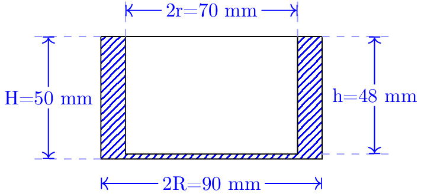

pre.tex
\documentclass[tikz]{standalone}\input{pre.tex}\begin{document}\begin{tikzpicture}[math3d]
% \draw (0,0) node[transform shape, rotate=90, scale=2, blue] {$S$};
\draw[pattern=north east lines, pattern color=blue] (0,0) rectangle (90pt,50pt);
\draw[fill=white] (10pt,2pt) rectangle (80pt,50pt);
\begin{scope}
\lineann[1]{90}{50pt}{H=50 mm}
\end{scope}
\begin{scope}[xshift=90pt, yshift=2pt]
\lineann[-1]{90}{48pt}{h=48 mm}
\end{scope}
\begin{scope}[xshift=0pt, yshift=-10pt]
\lineann[0]{0}{90pt}{2R=90 mm}
\end{scope}
\begin{scope}[xshift=10pt, yshift=50pt]
\lineann[0.5]{0}{70pt}{2r=70 mm}
\end{scope}
% Draw line annotation
% Input:
% #1 Line offset (optional)
% #2 Line angle
% #3 Line length
% #5 Line label
% Example:
% \lineann[1]{30}{2}{$L_1$}
\end{tikzpicture}\end{document}